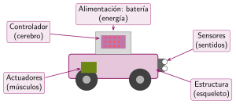
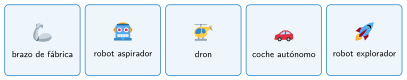

Qué es un robot
🤔 Pienso5 min
Qué hago aquí: Piensa un momento y contesta con lo que ya sabes. No pasa nada si no lo sabes: es para empezar.
Marca las frases que, para ti, describen a un robot. No pasa nada si fallas: al final lo revisarás.
📖 Leo y aprendo15 min
Qué hago aquí: Lee despacio, mira los dibujos y los ejemplos, y quédate con la idea clave del final.
Un robot es una máquina que hace tres cosas:
- Percibe: nota lo que pasa a su alrededor.
- Decide: sigue un programa. El programa se puede cambiar.
- Actúa: se mueve o mueve cosas.
Un robot tiene cinco partes. Se parecen a las partes de nuestro cuerpo.


✏️ Hago25 min
Qué hago aquí: Haz las actividades en orden. Empieza siempre por las básicas.
Une cada parte del robot con la parte del cuerpo a la que se parece.
| Estructura • | • Cerebro |
| Sensores • | • Músculos |
| Controlador • | • Esqueleto |
| Actuadores • | • Sentidos |
Completa: un robot , y .
Completa la tabla.
| Robot | Un sensor | Un actuador |
|---|---|---|
| Robot aspirador | ||
| Robot Nezha |
Mira un Nezha montado. Dibújalo y señala con flechas dónde está cada una de sus cinco partes.
✏️ Puedes responder escribiendo, con un dibujo o un esquema, o contándolo en voz alta.
🚀 Amplío (si quieres saber más)
Qué hago aquí: ¿Has terminado? Lee la curiosidad o elige el reto. Es voluntario.
Una tostadora tiene estructura, un temporizador y una resistencia que calienta. ¿Por qué no es un robot? Usa las tres cosas que hace un robot.
✅ Compruebo5 min
Qué hago aquí: Contesta sin mirar la ficha y marca cómo lo llevas.